Repaso de la Tanda 10N3
Lo que quedó a medias de la 10N: «Puede editar» en la pantalla, avisos, reservas, cuentas, la película de la apertura, el perfil y las portadas. Marca cada punto en tu teléfono cuando lo hayas comprobado (se guarda en este navegador).
§0 · Antes de empezar ✅ Hecho — Prompt guardado en docs/dias/PROMPT_TANDA10N3.md y en el commitDónde: No es de móvil. §0 · Supabase real ✅ Hecho — Migraciones 0032 y 0033-0040 aplicadas y sin error al probarComprobado contra Supabase real: funciones de la 0036, tablas de 0037-0040 y la columna decisiones (0039) existen y responden. Ninguna da error Dónde: No se mira en el móvil ⚠️ A medias — Código de invitación que se repite (el mismo código para el mismo viaje)Real: el dueño ve su invitación vigente y otra cuenta no ve las del viaje. crear_invitacion/canjear_invitacion exigen cuenta de verdad (no anónima) y rechazan a las anónimas; con cuentas anónimas no se pueden probar de verdad. Probado en PGlite y con el cliente Dónde: RUTA > Compartir dos veces, dueño con cuenta de email: mismo código ✅ Hecho — Permisos: cambiar permiso y su aviso en la campanaReal: solo el dueño cambia permisos; a Luis le llega el aviso «permiso» y lo lee con sus propias reglas Dónde: Campana del invitado al que el dueño cambia el permiso ✅ Hecho — Quitar a alguien: deja de ver el viaje, aviso «Ya no formas parte»Real: el invitado lo ve antes y deja de verlo al quitarlo; le llega el aviso. Un editor no quita y el administrador no puede quitarse ni salir Dónde: Personas del viaje > quitar, y la campana del quitado ⚠️ A medias — Plaza del pase que vuelve al quitar o salirNo probado en real: hace falta un pase de verdad (se crea con un cobro). Sí está en PGlite Dónde: Dueño con pase Grupo: quitar a alguien y ver «3 de 4 usadas» ✅ Hecho — Salir del viajeReal: sale, deja de verlo y no puede salir dos veces Dónde: Personas del viaje > Salir del viaje, cuenta invitada ✅ Hecho — Avisos de la campana: permiso, quitado, viaje_cambiado, recomendación/aceptadaReal: los cinco llegan. Los gastos (gasto_pendiente/resuelto) no los probé: son de D2 Dónde: Campana de cada cuenta ✅ Hecho — El directo (Realtime) con dos clientes escuchando a la vezReal: el cambio de Luis llega al dueño en directo (trips) y los avisos también. Falló una vez y lo arreglé: los avisos seguidos de la misma persona se juntan actualizando el aviso, no creando otro; ahora se escuchan también esas actualizaciones. Con dos navegadores de verdad no lo he visto, con dos clientes de Supabase sí Dónde: Dos móviles: el dueño cambia algo, el otro mira RUTA §1 · «Puede editar» en la pantalla ✅ Hecho — Quien puede editar toca la ruta como el administrador: DÍAS, EXPLORAR, añadir, mover, quitar y las rayitas de los días, sin lápiz ni propuestaYa funcionaba en la ruta desde la 10N (usePuedeCambiarLaRuta); lo que seguía mal era useModoInvitado.soloVer, que lo trataba como invitado: ahora solo vale para quien solo recomienda. Comprobado en la prueba (reordenar, quitar, mover a otro día, puntitos y rayitas, EXPLORAR, sin lápiz). Dónde: Cuenta «Puede editar»: pestañas DÍAS (··· de la parada y rayitas de los días) y EXPLORAR (añadir un sitio); no sale el lápiz 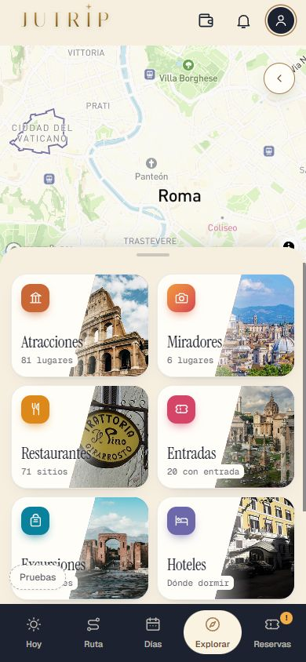
⚠️ A medias — Acepta o rechaza propuestas y gastos desde la campanaHecho en la app (la hoja «Ana te propone N cambios» con [Aceptar]/[Rechazar] y la etiqueta dorada del día ahora salen también para quien puede editar; los gastos ya los decidía puedeEditar). Falta APLICAR la migración 0045: sin ella el aviso de la propuesta en la campana sigue llegando solo al dueño. La parte de base de datos no se ha probado contra Supabase. Dónde: Cuenta «Puede editar», con una propuesta pendiente de un invitado: campana, o etiqueta «1 recomendación» en la tarjeta del día en RUTA 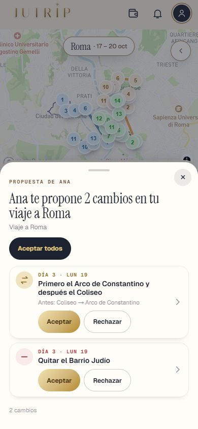
✅ Hecho — No ve el botón de las fechas (apagado), ni RESERVAS de llegada y vuelta ni el alojamiento (en gris)El botón de fechas de la cabecera del mapa sale apagado y el calendario no se abre desde ningún sitio (también para quien solo recomienda). Llegada, vuelta y alojamiento en gris como antes. Dónde: Cuenta «Puede editar»: RUTA (arriba, destino y fechas, sin responder al toque) y RESERVAS (Llegada y vuelta, Alojamiento) 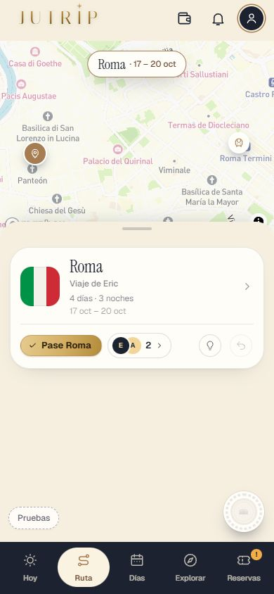
✅ Hecho — No puede invitar, quitar, cambiar permisos ni borrar el viajeEn «Personas del viaje» solo tiene [Salir del viaje]; en «Mis viajes» el viaje ajeno es «Salir de este viaje», no borrar. Dónde: Cuenta «Puede editar»: RUTA › caras de las personas del viaje; Perfil › Mis viajes 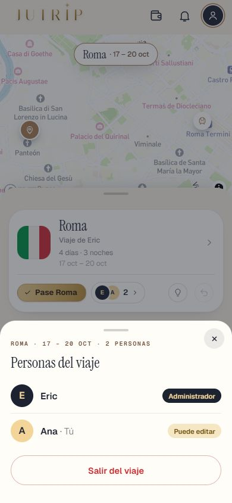
§2 · Duda 1 ✅ Hecho — Los menús de tres puntitos: la hoja clara está bienSe queda la hoja clara. Dónde: DÍAS › tres puntitos de un día o de una parada. §2 · Duda 4 ✅ Hecho — «Mover a» y el Arco de Constantino: donde menos desvío haya, sin quedar en medio de una visita largaUsa la misma lógica que añadir un sitio (mejorHuecoEnElDia: nunca el primero de un día con paradas). Lo de «en medio de una visita larga» sale de ese cálculo; no hay una regla aparte para las visitas largas. Dónde: DÍAS › tres puntitos de una parada › Mover a (cualquier cuenta que pueda editar). §2 · Duda 5 ✅ Hecho — El Free Tour del invitado: Eric lo prueba y dice; mientras, se deja como estáSin cambios. Pendiente de que Eric abra su viaje como invitado y diga si falta. Dónde: EXPLORAR › Entradas, con la cuenta del invitado. §2 · Duda 6 ✅ Hecho — La ✕ para quitar un gasto: se quedaSe queda tal como estaba. Dónde: RUTA › cartera › Extras, con la cuenta que añadió el gasto o con el administrador. §2 · Duda 2 ✅ Hecho — Avisos con artículo («ha añadido la Fontana de Trevi al sábado 28»)El artículo se pone en shared/avisos/textos.js con la tabla data/logros/articulos.json, que el servidor carga: el mismo texto en la campana y en el aviso del móvil. La tabla ya tenía los 94 sitios de Roma. Sin artículo si no está Dónde: Campana del invitado, aviso «ha cambiado el viaje: ha añadido…» ✅ Hecho — Coherencia con la línea «Eric ha cambiado el viaje.»Esa línea no nombra ningún sitio, así que no lleva artículo Dónde: Arriba del móvil del invitado, cuando el dueño cambia algo §2 · Duda 3 ⚠️ A medias — Quitar a alguien borra sus propuestas enviadas sin decidir; las decididas se quedanMigración 0041 hecha y probada en PGlite (también al salir uno mismo). SIN APLICAR: la aplica Eric Dónde: Dueño: quitar a quien tenía una propuesta sin decidir; mirar la campana ✅ Hecho — Su propuesta sin enviar se borra de su móvil la próxima vez que abra la appAl abrir la app, con los viajes cargados, se borran las propuestas guardadas de viajes que ya no ve (y al dejar de verlo en directo). Probado en lo puro; no visto en un móvil real Dónde: Cuenta quitada: abrir la app tras tener una propuesta a medias §2 · Duda 7 ✅ Hecho — Alojamiento del invitado: [Buscar alojamiento] para mirar, sin «mandarle la idea» al dueñoEn el mapa de alojamientos ya no sale «¿Ya tienes alojamiento? Añádelo» para quien no es el dueño; si algo le abre la hoja «Tu alojamiento», se cierra con «Esto lo cambia Eric». El aviso «El alojamiento lo guarda Eric» se ha quitado. Dónde: Cuenta «solo recomendar» o «puede editar»: RESERVAS › Alojamiento › [Buscar alojamiento] 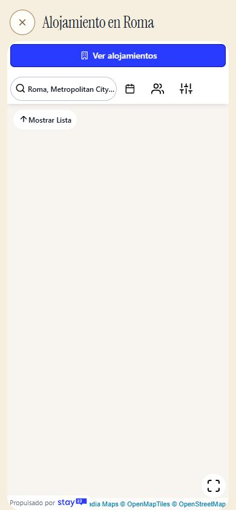
§2 · Duda 8 ✅ Hecho — [Proponer el cambio] (solo recomienda) y [Moverlo al viernes 27] (puede editar) en el aviso «Tu entrada del Coliseo es el viernes 27…»PropuestaHost escucha trazo:proponer-cambio-reserva: mueve la parada al día de la entrada (propuesta de quien recomienda: un cambio más y el lápiz sube; editor: directo con Deshacer). Probado con el evento; el aviso real del servidor depende de la migración 0042 (D1), no probado contra Supabase. Dónde: Campana, aviso «Tu entrada del Coliseo es el … y en la ruta está el …» (solo recomendar: [Proponer el cambio]; puede editar: [Moverlo al …]) 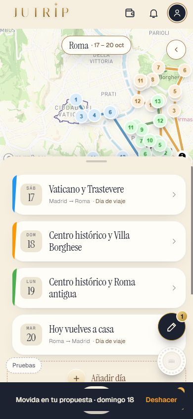
§2b · Dudas de la 10N2 ✅ Hecho — El alojamiento y el coche entran solos en las cuentas: el precio que el administrador pone en RESERVAS cuenta como pagado por él y repartido entre todos los del viajeSe toma de las líneas del presupuesto (hotel de cada tramo con noches, y coche de alquiler), convertidas a la moneda del viajero. Sin precio en RESERVAS no entra nada (no se inventa). Dónde: Presupuesto (cartera) > tarjeta «Cuentas del grupo». Sección «Entra solo desde RESERVAS». Con cualquier cuenta del viaje; el precio lo pone el administrador en RESERVAS. 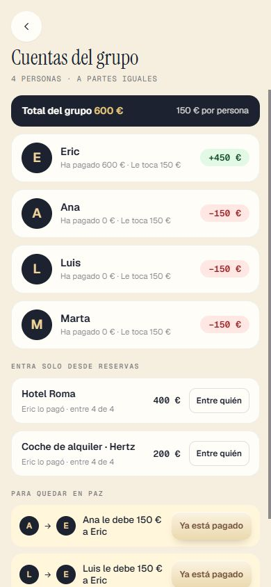
✅ Hecho — …con «¿Entre quién?» para cambiarlo, como un gasto másBotón [Entre quién] en cada línea, solo para el administrador; se guarda con el viaje (`route.cuentasEntre`). Si lo ponen todos, vuelve a «entre todos». Quien puede editar no lo cambia (el viaje solo lo guarda el administrador). Dónde: Cuentas del grupo > «Entra solo desde RESERVAS» > [Entre quién] (cuenta del administrador). 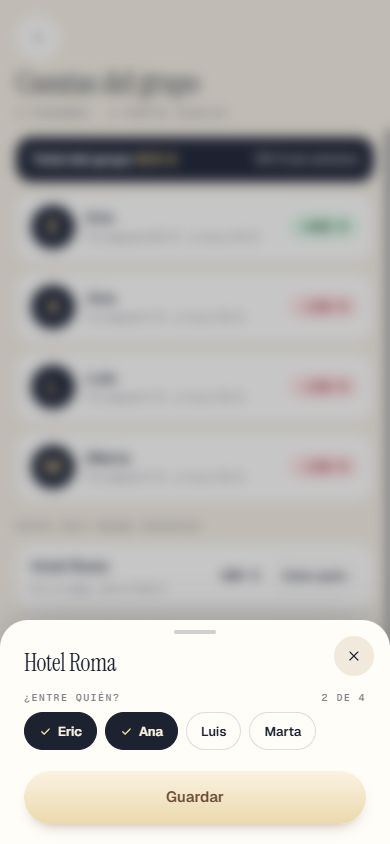
✅ Hecho — Los billetes de avión, no (cada uno paga el suyo)Ida y vuelta no entran en las cuentas; tampoco seguro, eSIM ni traslados (no se pidió). Dónde: Presupuesto con billetes con precio: el total de «Cuentas del grupo» no los suma. ✅ Hecho — Que no se cuente nada dos veces: si ya hay un gasto [Para todos] igual, avísaloAviso amarillo «Puede que algo esté contado dos veces» en la pantalla de cuentas (mismo importe y concepto parecido: nombre incluido o «hotel/alojamiento», «coche/alquiler»). Avisa pero sigue contando los dos. Dónde: Cuentas del grupo (cualquier cuenta): apunta un gasto [Para todos] «Hotel…» con el mismo importe que el alojamiento. 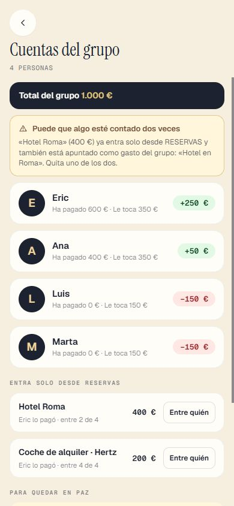
✅ Hecho — «Deshacer» bajo «✓ Pagado»: se quedaSin cambios (ya estaba en la 10N2). Dónde: Cuentas del grupo > línea pagada > «Deshacer» (quien paga, quien cobra, administrador o puede editar). 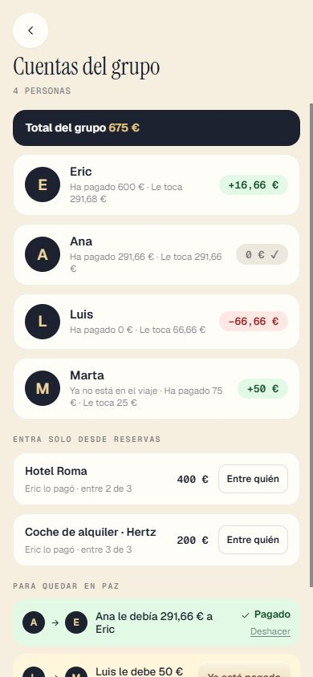
✅ Hecho — El administrador lo puede tocar todo en las cuentas: marcar un pago como hecho y deshacerloYa lo permitían las reglas de la 0040; probado también con pagos de quien ya salió. La 0043 (SIN APLICAR) hace que el aviso de ese pago solo llegue a quien sigue en el viaje. Dónde: Cuentas del grupo > [Ya está pagado] y «Deshacer» en cualquier línea (cuenta del administrador). ✅ Hecho — …y editar cualquier gasto del grupo (quién lo pagó, entre quién y el importe), también los de quien ya salió del viajeEn la hoja de editar, quien salió sigue saliendo con su nombre en las pastillas. FALLO ENCONTRADO Y ARREGLADO en la 0043: quien salía del viaje seguía pudiendo editar y quitar sus propios gastos; ahora no (los suyos se quedan para las cuentas). Sin la 0043 ese fallo sigue en Supabase. Dónde: Presupuesto > Extras > tocar un gasto de alguien que salió (cuenta del administrador; también «puede editar»). 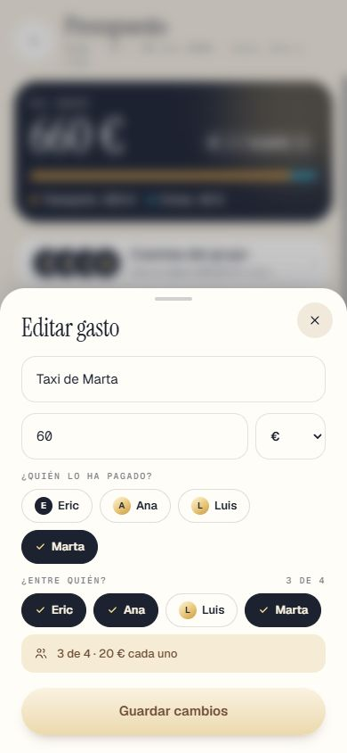
§3 · Lo demás ⚠️ A medias — Aviso «Eric ha reservado el Coliseo para ti: …» creado por el servidor (disparador SQL sobre la reserva del viaje) y que llegue a la campana, también con la app cerradaHecho y probado con PGlite y las migraciones reales (incluida la 0042); la 0042 está SIN aplicar: Eric la aplica. Sin ella, el móvil sigue calculándolo. Con la app cerrada llega como cualquier aviso (cola del aviso del móvil, solo con PUSH_ACTIVO); no probado contra Supabase real. Dónde: Invitado marcado en «¿Para quién es?» (cuenta real con el viaje compartido): campana de la cabecera, aviso sin leer ⚠️ A medias — Aviso para los no incluidos con [Reservar la mía a la misma hora] y [Ya la tengo]El servidor crea el aviso (caso no_incluido) y la campana lo pinta con los dos botones (AvisoDeEntrada), que abren RESERVAS con día y hora del dueño. Botones comprobados por código y en la prueba de pantalla antigua (aviso calculado en el móvil); el del servidor en pantalla no se ha visto sin la 0042 aplicada. Dónde: Invitado NO marcado: campana de la cabecera ✅ Hecho — No se duplican con lo que ya calcula el móvilEl móvil no calcula el aviso de una reserva si la lista de la cuenta ya trae uno con el mismo reserva_id; en el servidor, la clave impide repetirlo aunque se guarde igual dos veces. Si el dueño cambia la hora, llega uno nuevo (a propósito). Dónde: Invitado: campana, un solo aviso por entrada ⚠️ A medias — Aviso «Tu entrada del Coliseo es el viernes 27, y en la ruta está el jueves 26» creado por el servidor, con sitio, día de la reserva, día de la ruta y la acciónSe crea al guardar el invitado su entrada (disparador sobre reservas_invitado). Si luego el dueño mueve la parada, el servidor no lo recalcula (lo sigue avisando el móvil al abrir). [Proponer el cambio] lanza el evento trazo:proponer-cambio-reserva con los datos (reservaId, sitio, diaDeLaReserva, diaDeLaRuta, dateIso); lo engancha E1. Dónde: Invitado con su entrada en otro día: campana y Reservas > Entradas ✅ Hecho — Lo que compra el invitado, guardado en su cuenta con la 0038 (viaja entre sus móviles)Probado con PGlite (0038 real): guardar, recuperar en otro móvil, que lo quitado no vuelva y subir lo hecho sin conexión; solo lo lee su dueña (RLS). No probado contra Supabase real (la 0038 la aplicó Eric). Dónde: Invitado con cuenta: guardar su entrada en un móvil y abrir el viaje en otro §3 · Lo demás que quedó a medias ✅ Hecho — El «por persona» con «¿Para quién es?»: una reserva para 2 de 4 cuenta solo entre esos 2Cuando todo es entre todos, el «por persona» es el de siempre. Si hay una entrada para 2 de 4, un gasto «entre 3» o el hotel entre unos pocos, la píldora dice «tu parte» (lo que te toca a ti), porque ya no hay un único «por persona». Una reserva sin «¿Para quién es?» cuenta solo para el administrador. Dónde: Presupuesto con una entrada marcada para 2 personas (RESERVAS > añadir entrada > «¿Para quién es?»): el ojo de la tarjeta oscura dice «… € tu parte». Con cualquier cuenta. 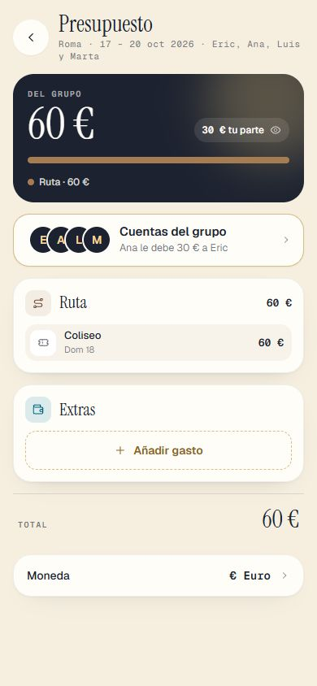
⚠️ A medias — «Eric ha cambiado el viaje.» y la propuesta a medias marcada cuando el dueño quita lo que el invitado había propuestoYa estaba enchufado (CompartidoHost pinta la línea tras Realtime/refresco; hydrateTrip → alLlegarElViaje marca «ya no está en la ruta» con su ✕). Probado el marcado en la pantalla; la línea con Realtime real no se ha visto con dos móviles en esta prueba. Dónde: Cuenta «solo recomendar» con un cambio sin enviar (p. ej. quitar el Panteón) y el dueño quitándolo: lápiz › lista 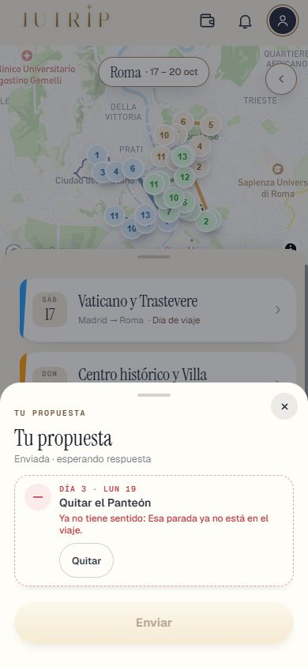
✅ Hecho — El lápiz no tapa la última parada ni el botón de los logros en 390 px con un día largoEn DÍAS (día de 18 paradas) y EXPLORAR ya había hueco. En RESERVAS el lápiz tapaba los últimos botones («Comprar»/«Añadir»): arreglado con el mismo hueco al final. Dónde: Cuenta «solo recomendar» con algún cambio hecho: DÍAS (abrir un día largo, bajar al final) y RESERVAS (bajar al final) 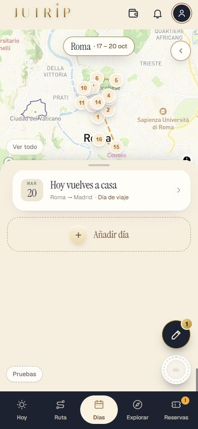
§3b · Película de la apertura ✅ Hecho — Más grande: el mapa y las tarjetas de las paradas, casi a todo el ancho, con margen pequeño a los lados, adaptado al ancho de cada móvil y sin deformarseEscena del mapa: mapa, filas de llegada/salida y tarjetas de paradas con 14 de margen por lado (a 390, 430 y 360 de ancho, medido). El escenario se escala igual en ancho y alto. La ruta con sus pines no se estira (se quedaría deformada): va centrada dentro del mapa más ancho. Las demás escenas (HOY, colección, pasaporte, fotos) siguen a su tamaño de Design, solo algo mayor que antes (escala 0,85 en vez de 0,83 a 390x664). Dónde: Abre la app sin sesión (pantalla de inicio / [Ver] de la película del pase) y mira la primera escena, «Tú decides el viaje». Cualquier cuenta. 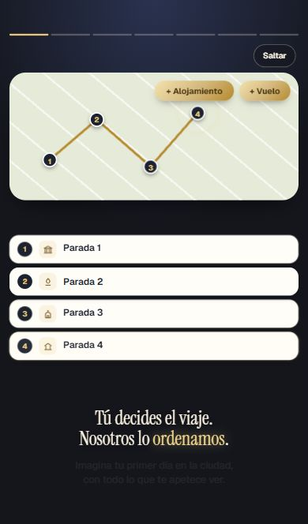
✅ Hecho — Los textos de abajo, un poco más arriba, con separación clara de la última tarjeta y sin pegarse al borde de abajoLos textos empiezan justo bajo lo último de arriba (y=608 de 780) y nunca bajan del borde: aire mínimo de 16 px abajo medido a 390x664, 430x932 y 360x640. Separación mínima de 10 px con lo de arriba, comprobada en la prueba. Sin iPhone real: medido en Chrome emulando 390x664. Dónde: En el móvil, con la barra de Safari: escena 1 (Tú decides el viaje. Nosotros lo ordenamos.). Cualquier cuenta. ✅ Hecho — Los textos se ven enteros en un móvil de 390 de ancho con la barra de Safari (≈ 390x664)Medido a 390x664, 430x932 y 360x640 en las 8 escenas: ningún texto cortado por el borde visible. Pendiente de que Eric lo mire en su iPhone (no se ha probado en un iPhone real). Dónde: iPhone con Safari y su barra visible: recorre la película entera. 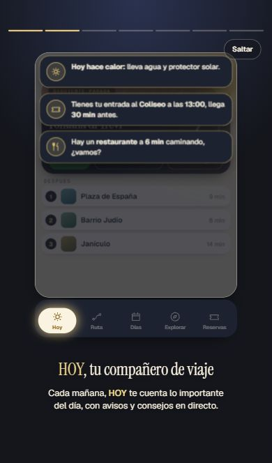
✅ Hecho — Lo mismo en todas las escenas de la películaEscenas 1 mapa, 2 HOY, 3 mapa del mundo, 4 emblema secreto, 5 colección, 6 pasaporte, 7 fotos y resumen, 8 final. Arreglado de paso: HOY y pasaporte tapaban su texto (se recogen un 7 %), el emblema secreto estaba pegado a la izquierda (ahora centrado) y su aviso quedaba cortado abajo. Quedan visibles unos bordes oscuros a los lados en escenas con fondo propio de 390 de ancho (colección, pasaporte, fotos), que ya estaban antes. Dónde: Película completa, todas las escenas. Cualquier cuenta. §3b · El perfil ✅ Hecho — 2. El perfil viejo se cuela al abrir el perfil: que no salga nunca; mientras llegan los datos, el perfil nuevo vacío; quitar el viejo del código si ya no se usaCon los logros encendidos el perfil viejo ya no sale NUNCA: mientras llegan los datos (o si no llegan) se ve el perfil nuevo vacío (huecos gris claro, «Hola, Eric» ya puesto) con «Mis viajes» de este móvil debajo. La prueba mira cada 60 ms con la respuesta retrasada 3,5 s y con la respuesta que no llega: 0 muestras con el viejo. NO he borrado PerfilSheet/CabeceraDeSiempre/FilaDeViaje/MapaMisViajes: con los logros APAGADOS (hoy es el caso de producción, VITE_LOGROS_ACTIVOS sin poner) siguen siendo el único perfil que existe; borrarlo dejaría a todos sin perfil. Dónde: Perfil (círculo de arriba a la derecha) con una cuenta con los logros encendidos: debe verse el esqueleto gris un instante y luego el perfil con EXP, billete, vitrina y pasaporte, sin mapa grande ni «1 país · 1 lugar». 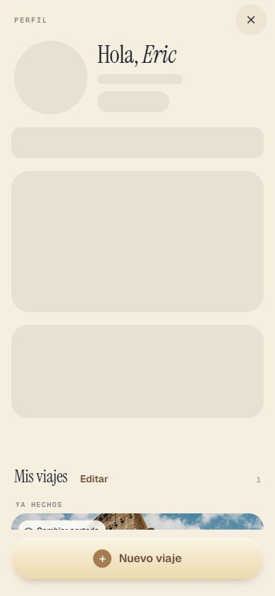
✅ Hecho — 3. La tarjeta de «Mi pasaporte»: la esquina de la hoja lleva dos sellos estampados (redondo azul y cuadrado verde de Roma, como P1); sin sellos del viajero dos de muestra; con los suyos los dos últimos; el círculo del mapa se pinta con lo visitadoSin sellos: el redondo azul y el cuadrado verde de Roma (decoración, con fechas de muestra). Con uno solo: el suyo y uno de muestra. Con dos o más: los dos últimos que ha ganado. El mapa del círculo ya se pintaba con paises_iso (comprobado: 6 países pintados con el demo, 1 con solo Italia); no he tocado esa parte. Ojo: la tarjeta lee el servidor (perfil.pasaporte); la prueba lo ha comprobado con los logros de mentira, no con Supabase real. Dónde: Perfil › tarjeta granate «Mi pasaporte», esquina inferior derecha. Con una cuenta sin viajes hechos: dos sellos de muestra; con sellos ganados: los dos últimos. 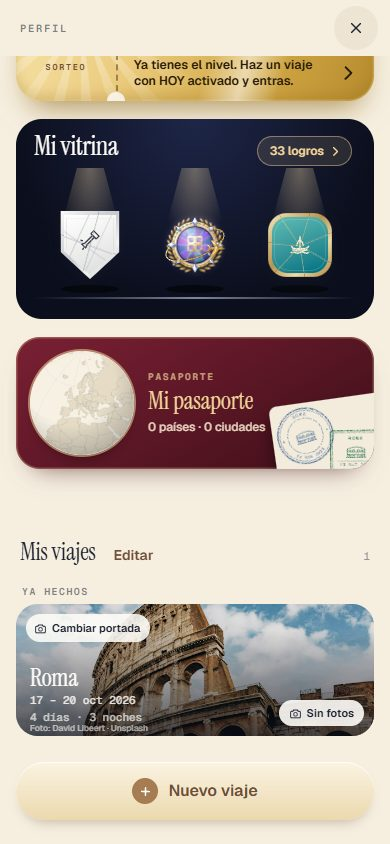
⚠️ A medias — 4. La foto del perfil dentro del emblema: al tocarla ajustarla al círculo (mover con el dedo, pinch, [Guardar]) y cambiarla por otra; lo ajustado se guarda en la cuenta y se ve igual en todos los sitiosHecho y probado: al tocar el emblema se abre «Tu perfil» con la foto en un círculo grande (un dedo mueve, dos dedos acercan, barra de zoom y rueda como alternativa), [Hacer una foto] / [Elegir de la galería] para cambiarla, y [Guardar] aplica el encuadre. La foto ya no se recorta a un cuadrado al subirla (se guarda entera, lado largo 384 px); el encuadre (x, y, zoom) se guarda aparte. Un único componente (FotoEncuadrada) lo pinta en el emblema, Avatar, caras de «Personas del viaje»/cabecera de viaje y la hoja de ajustar: la prueba comprueba que los cuatro dan la misma posición relativa. FALTA/NO COMPROBADO: (1) el guardado en la CUENTA y que los demás lo vean exige aplicar la migración 0044 (sin ella se guarda solo en este móvil y no falla); (2) no probado contra Supabase real; (3) las fotos ya subidas antes son cuadradas (solo se pueden mover/acercar, no alejar más allá del cuadrado); (4) los avatares cuadrados redondeados de la campana (AvisoDeEntrada/AvisoDeGasto/ListaDeAvisos) NO los he tocado porque los edita otro agente: siguen con la foto centrada. Dónde: Perfil › tocar el círculo con tu foto (arriba a la izquierda) › mover y pellizcar › Guardar. Después mira Perfil, y con un viaje compartido «Personas del viaje». Con una cuenta con foto propia o de Google. 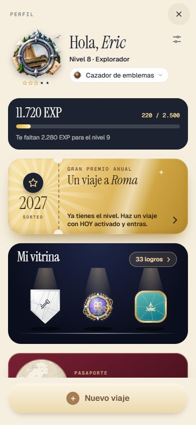
✅ Hecho — 5. «Mis viajes» más separado de «Mi pasaporte»: unos 70 px de margenMedido en la pantalla: 70 px entre el borde de abajo de la tarjeta del pasaporte y el título «Mis viajes» (18 del hueco de siempre + 52). Dónde: Perfil, bajando hasta la tarjeta granate: debajo, un hueco claro antes de «Mis viajes». ⚠️ A medias — 6a. Portada por defecto: una foto bonita del destino (Roma una de Roma, París una de París), con licencia libre y crédito; la misma para todos los viajes a ese sitioRoma: el Coliseo de día (public/fotos/roma/dia_coliseo_p.jpg, David Libeert, Unsplash) con su crédito en letra pequeña en la tarjeta. Es la única ciudad con fotos propias en public/fotos/, así que París y cualquier otro destino piden su foto al servidor de fotos de la app (Unsplash/Wikipedia con su crédito) y, si no hay, queda el degradado de siempre. Eso último NO lo he podido comprobar (no hay servidor de fotos con clave en la prueba). Dónde: Perfil › Mis viajes: la tarjeta de un viaje a Roma con la foto del Coliseo; un viaje a otro sitio con su foto o el degradado. 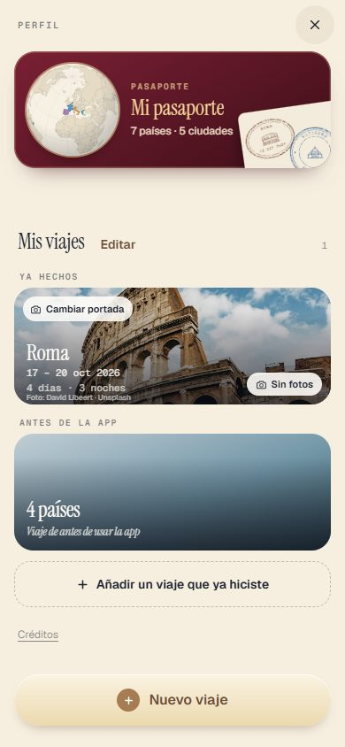
⚠️ A medias — 6b. El viajero puede cambiar la portada: «Cambiar portada» con dos opciones (una de sus fotos del viaje o una de su galería) y volver a la del destinoCada tarjeta lleva un botón «Cambiar portada» (arriba a la izquierda) que abre una hoja con: Una foto de tu viaje (cuadrícula con las fotos de sus paradas), Una foto de mi galería, y Volver a la del destino. Hecho exactamente como un botón en la tarjeta, no al tocar la tarjeta entera (tocar la tarjeta sigue abriendo el viaje/álbum, como antes). Se guarda por persona y viaje en este móvil y, con la migración 0044, en la cuenta (travelers.portadas). Probado con fotos de mentira de las paradas (sin Supabase real); la subida de la foto de galería al almacén perfiles solo se usa con la cuenta encendida y NO la he probado contra Supabase (sin cuenta se guarda la foto pequeña en el móvil). Dónde: Perfil › Mis viajes › «Cambiar portada» en la tarjeta de un viaje. Con una cuenta con fotos hechas en las paradas del viaje. 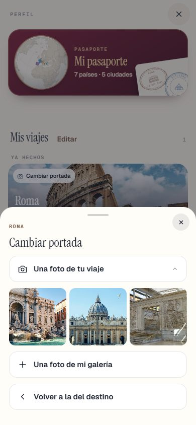
✅ Hecho — 6c. Al acabar el viaje, si tiene fotos suyas y no ha elegido portada, sale sola la primera de sus fotos (y la puede cambiar)Viaje ya hecho, sin portada elegida y con fotos suyas: sale la primera (día más bajo, la más antigua). La puede cambiar, y si elige «la del destino» no se le vuelve a cambiar. Un viaje hecho sin fotos suyas se queda con la del destino. Probado con fotos de mentira. Dónde: Perfil › Mis viajes › «Ya hechos»: un viaje acabado con fotos tuyas en sus paradas, sin haber tocado «Cambiar portada». 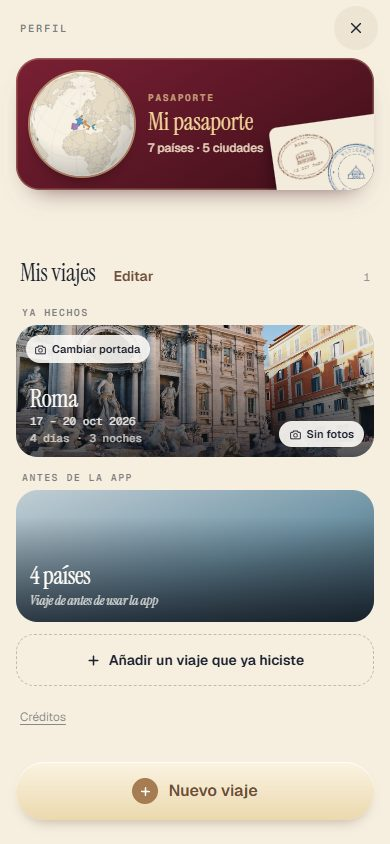
✅ Hecho — 7. Fuera la etiqueta «Abierto» de la tarjeta del viaje en «Mis viajes» (y decir qué quería decir)Quitada de la tarjeta de «Mis viajes» del perfil nuevo. Lo que quería decir: «este es el viaje que tienes cargado ahora mismo en la app (el que ves en RUTA/DÍAS/HOY)»; salía en cualquier viaje que coincidiera con la ruta abierta, aunque no fuera el de hoy, y por eso no se entendía con «Próximo/En curso/Ya hechos» encima. Se mantiene «Día 2 de 5» en el viaje en curso. Sigue existiendo en el perfil VIEJO (FilaDeViaje, solo con los logros apagados): lo he dejado porque su prueba antigua (pruebaFase6y4_perfil) lo exige; dime si también quieres quitarlo ahí. Dónde: Perfil › Mis viajes: ninguna tarjeta dice «Abierto». §4 · La prueba ⚠️ A medias — Contra Supabase real, con dos cuentas: invitar, cambiar un permiso, quitar, un gasto [Para todos] aceptado y uno rechazado, una propuesta aceptada, y el directo con dos navegadores abiertosHecho con tres cuentas anónimas de prueba (que se borraron al acabar): permisos, quitar, salir, avisos, propuesta aceptada y el directo con dos clientes. NO se pudo contra Supabase real: crear y canjear una invitación (exigen cuenta de verdad, no anónima), la plaza del pase que vuelve (necesita un cobro real), los gastos aceptado y rechazado, ni el directo con dos NAVEGADORES (solo dos clientes). Las migraciones 0041 a 0045 son nuevas y están SIN aplicar. Dónde: No es de móvil. ✅ Hecho — Prueba nueva pruebaTanda10N3 (editar, avisos, reservas, cuentas, apertura y perfil; y la prueba contra Supabase real con dos cuentas)Editar 45, avisos 20, reservas 31, cuentas 63, apertura 207, perfil 61 y real contra Supabase 47: todas en 0 fallos (en una pasada falló la parte de reservas por un texto de botón que cambió y se actualizó, la del perfil por un puerto a mano en un ayudante, y la real por el límite de altas anónimas de Supabase; repetidas, 0 fallos). Además, la prueba de la 10N: 418 · 0 fallos. Dónde: No es de móvil. ✅ Hecho — La batería rápida y pruebaJutrip (Eric pidió no pasar la batería completa en esta tanda)Eric pidió no pasar la batería completa en esta tanda. Se pasaron pruebaJutrip (129 · 0), pruebaTanda10N (418 · 0), pruebaTanda10P_sorteo (62 · 0) y las pruebas de la tanda. Dónde: No es de móvil. §4 · Capturas ✅ Hecho — Capturas en docs/dias/capturas_jutrip/ y esta página a tamaño de móvilDónde: Esta página. ✅ Hecho — Capturas de cada escena de la película de la apertura a 390 de ancho con la barra de Safari (390x664)Ocho capturas, una por escena (la 8 es el final, a los 3 s, aún entrando). Dónde: docs/dias/capturas_jutrip/10n3_apertura_escena_1.jpg a _8.jpg §5 · El informe ✅ Hecho — Apartado «10N3» en docs/dias/INFORME_TANDA10B.md, con esta lista al finalDónde: No es de móvil. Todas las capturas
10n3_apertura_escena_1 10n3_apertura_escena_2 10n3_apertura_escena_3 10n3_apertura_escena_4 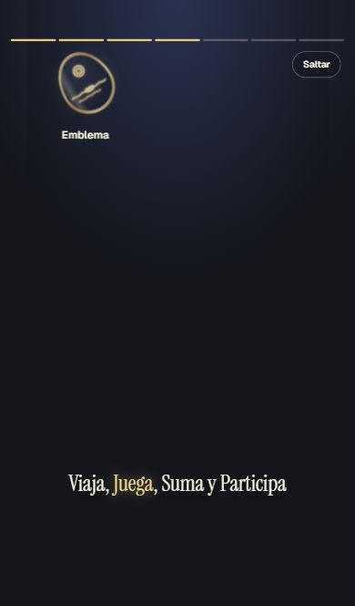
10n3_apertura_escena_5 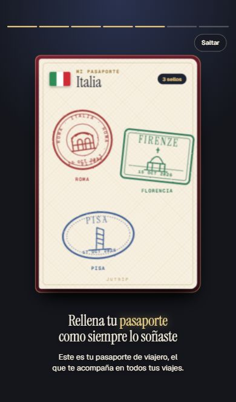
10n3_apertura_escena_6 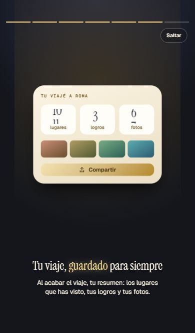
10n3_apertura_escena_7 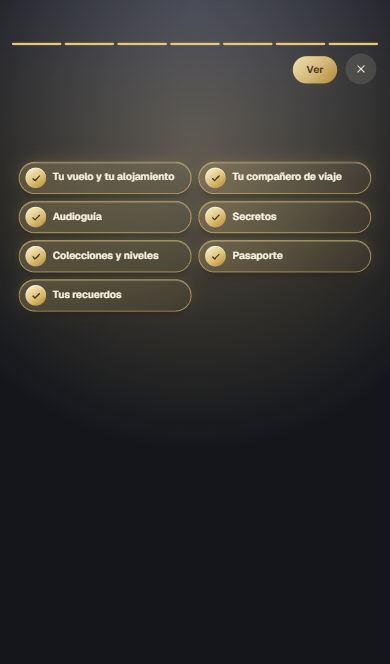
10n3_apertura_escena_8 10n3_cuentas_01_hotel_y_coche_entran_solos 10n3_cuentas_02_entre_quien_del_hotel 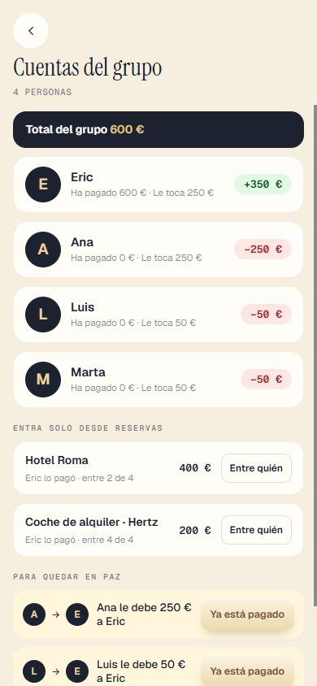
10n3_cuentas_03_hotel_entre_2 10n3_cuentas_04_aviso_contado_dos_veces 10n3_cuentas_05_admin_edita_gasto_de_quien_salio 10n3_cuentas_06_admin_marca_y_deshace 10n3_cuentas_07_tu_parte_con_para_quien_es 10n3_editar_editor_decide_propuesta 10n3_editar_editor_explorar 10n3_editar_editor_personas 10n3_editar_editor_reservas_gris 10n3_editar_editor_ruta_fechas_fijas 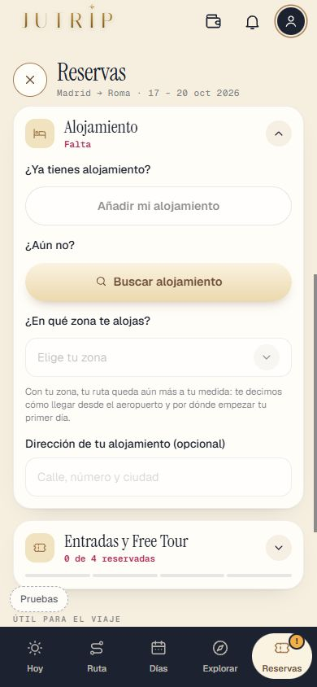
10n3_editar_invitado_buscar_alojamiento 10n3_editar_invitado_mapa_alojamiento 10n3_editar_lapiz_dia_largo_final 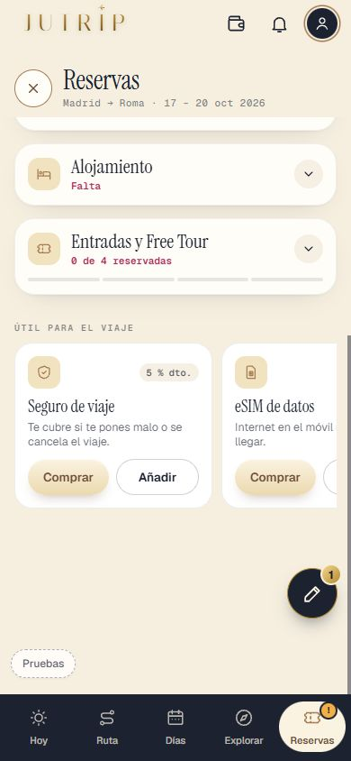
10n3_editar_lapiz_reservas_final 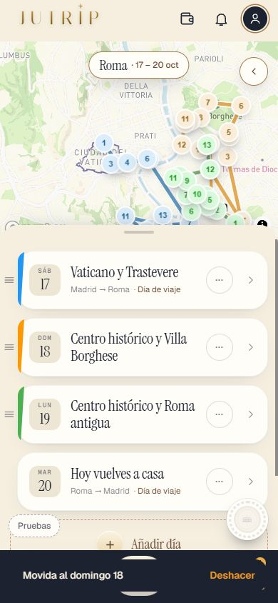
10n3_editar_moverlo_al_dia_editor 10n3_editar_proponer_cambio_coliseo 10n3_editar_propuesta_a_medias_marcada 10n3_perfil_01_abriendo 10n3_perfil_02_pasaporte_sin_sellos 10n3_perfil_03_foto_ajustada_en_el_emblema 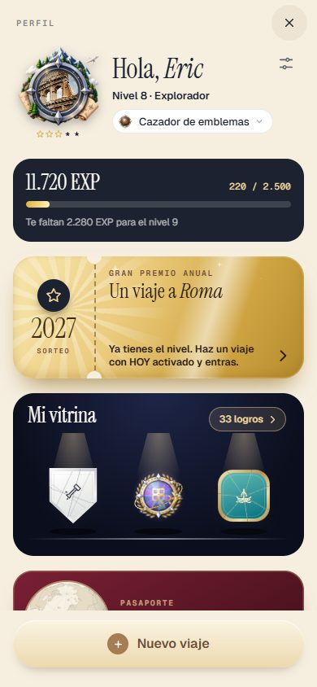
10n3_perfil_03a_foto_sin_ajustar 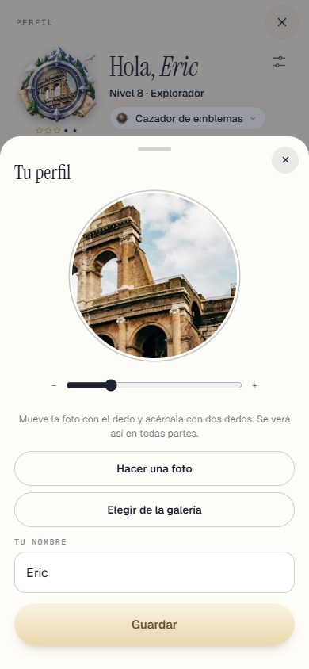
10n3_perfil_03b_ajustando_la_foto 10n3_perfil_04_mis_viajes_portada_destino 10n3_perfil_05_mis_viajes_portada_viajero 10n3_perfil_06_cambiar_portada